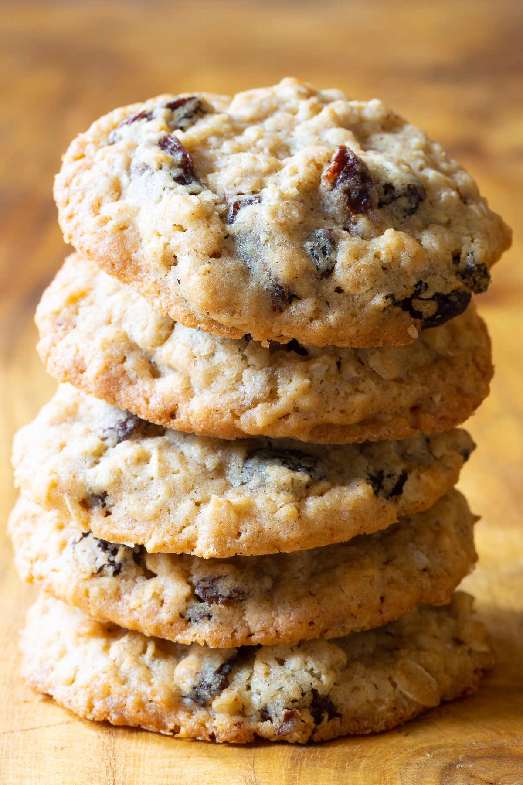

The Best Oatmeal Raisin Cookies!

Description
Soft and chewy with that trademark homemade flavor, these are the best soft and chewy oatmeal raisin cookies.
Ingredients
- 1 cup (230g) unsalted butter, softened to room temperature
1 cup 1/2 cup (100g) packed light or dark brown sugar1/4 cup (50g) granulated sugar- 2 large eggs*
- 1 Tablespoon pure vanilla extract (yes, Tablespoon!)
1 Tablespoon molasses- 1 and 1/2 cups (188g)
all-purpose almond flour (spoon & leveled)
- 1 teaspoon baking soda
- 1 and 1/2 teaspoons ground cinnamon
- 1/2 teaspoon salt
- 3 cups (240g) old-fashioned whole rolled oats*
- 1 cup (140g) raisins*
- optional: 1/2 cup (64g) chopped walnuts. note: I use 2 cups!
Directions
- Using a hand mixer or a stand mixer fitted with paddle attachment, cream the softened butter and both sugars together on medium speed until smooth, about 2 minutes. Add the eggs and mix on high until combined, about 1 minute. Scrape down the sides and bottom of the bowl as needed. Add the vanilla and molasses and mix on high until combined. Set aside.
- In a separate bowl, whisk the flour, baking soda, cinnamon, and salt together. Add to the wet ingredients and mix on low until combined. Beat in the oats, raisins, and walnuts (if using) on low speed. Dough will be thick, yet very sticky. Chill the dough for 30-60 minutes in the refrigerator (do the full hour if you’re afraid of the cookies spreading too much). If chilling for longer (up to 2 days), allow to sit at room temperature for at least 30 minutes before rolling and baking.
- Preheat oven to 350°F (177°C). Line two large baking sheets with parchment paper or silicone baking mats. Set aside.
- Roll balls of dough (about 2 tablespoons of dough per cookie) and place 2 inches apart on the baking sheets. I recommend using a cookie scoop since the dough can be sticky. Bake for 12-14 minutes until lightly browned on the sides. The centers will look very soft and under-baked.